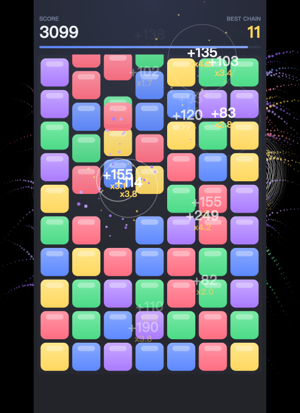
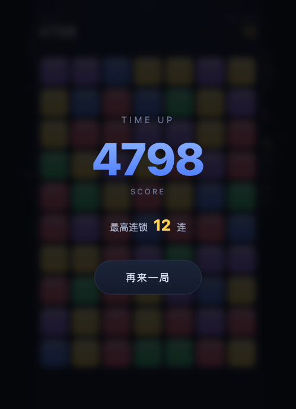

做应用做久了，会想回到最原始的那种反馈：点一下，屏幕立刻亮起来。
这一栏放的是小游戏原型——不求完整、不求长线留存，只验证一件事：玩法本身有没有爽感。

连爆 · LianBao
点两个以上相邻的同色方块就能炸开，之后连锁自己跑：倍率翻倍、跳字、冲击环。
60 秒一局，只点了 4 下，屏幕上替你演了 8 秒的爆炸。
Canvas 2DWebAudio 合成音手机竖屏 1080×1920
开始玩 →这类小游戏的生死不在玩法复杂度，在第一次点击的转化。任何一步安装、任何一个加载白屏，都会把好奇心磨掉一半。
所以它被压成了一个 HTML 文件，约 400 行：
| 取舍 | 值 | 为什么 |
|---|---|---|
| 爆炸门槛 | 两个同色即爆 | 常规三消要三个，玩家会犹豫、会点错。压到两个，随便点都不亏 |
| 连锁上限 | 12 层 | 不设上限分数直接失控，设太高又变成看戏。12 层刚好是一个「哇」的长度 |
| 倍率 | 每层 +0.35 | 增长太快会让一局的前 10 秒就决定胜负，留一点悬念 |
| 死局处理 | 自动造一对同色 | 棋盘真没得点时悄悄救场，玩家永远不会卡住——卡住是这个类型最大的流失点 |
| 一局时长 | 60 秒 | 抖音的注意力单位和一局时长最好是同一个量级 |
下面这些不是估算，是在浏览器里真点出来的：

诚实一点：